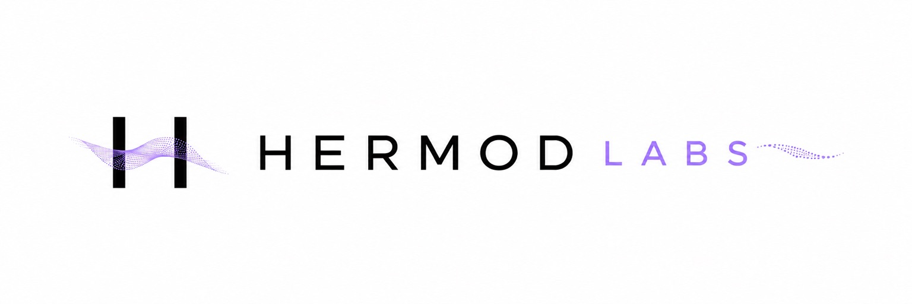

Choose a decision to review.
State the outcome you want, the constraints you face, and what would count as an improvement. Include whose work or outcomes the choice affects.
Give the review a clear purpose.

The platform · Free personal public beta
Decision Lab is our platform for examining decisions. Start with the Free personal version and a question from your own work. Make the objectives clear, examine the evidence and assumptions, and record the reasons behind your choice.
The Free personal version is in public beta, with individual reviews, local browser storage, basic reports, and manual export and import.
01 / Your first review
Choose a decision you know: which test to run next, whether to repair equipment, or how to improve a procedure. Use the free tool to work through what you know and what still needs an answer.
State the outcome you want, the constraints you face, and what would count as an improvement. Include whose work or outcomes the choice affects.
Give the review a clear purpose.
Bring together the evidence and assumptions behind your reasoning. Make the unanswered questions visible so you can see what needs another look.
See the basis for your judgment.
Create a basic report of your review. Keep your work in the browser, or use manual export and import to save a copy you can return to.
Take the reasoning with you.
02 / Try the free platform
Try the Free personal version of Decision Lab with a decision that matters to you.
Start an individual review, examine its supporting evidence, and keep a record you can revisit. The free tool is in public beta.
The Free public beta includes individual reviews, local browser storage, basic reports, and manual export and import.
Bring one question. Work through your first review.
Explore individual reviews, basic reports, and manual export and import in the Free personal version.
Try Decision Lab for free03 / Beyond a personal review
We’re seeking pilot partners for recurring analysis, shared reviews, and organizational oversight. Explore the proposed scope and tell us about your work on the homepage.